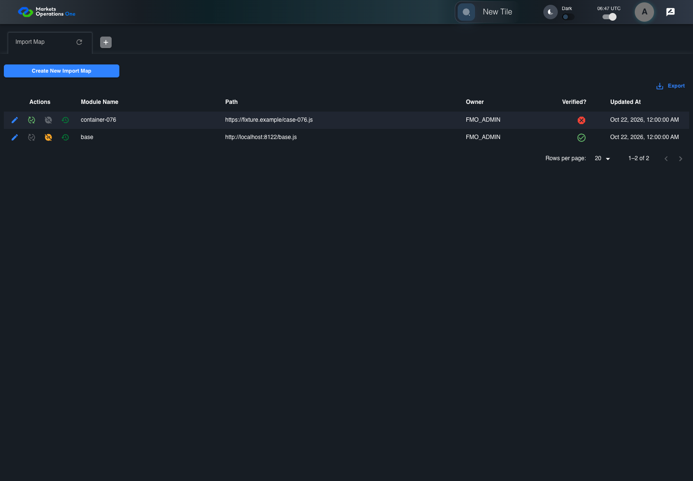

BFF-ADM-076 current BFF administration through actual UI
FAIL · application/run-072/bff-adm-076-current-bff-administration-through-actual-ui-30bd39e15b84-attempt-1 · ACTUAL_APPLICATION_LOCAL_SERVICES
Actual current React and exact-current BFF admin controllers/services/JPA with actual migration DDL in disposable PostgreSQL. Controlled OUD/EMS2 identities and local Spring bootstrap. Fixture SQL seeds/mutates isolated records; service errors are actual database errors. Undefined agreed messages remain unresolved acceptance.
2026-10-22T06:47:11.984Z to 2026-10-22T06:47:14.372Z
Assertions and result · Artifact manifest · Exact run inputs and source hashes
Result SHA-256:460f870c54e302d6d3593d9962ec3d1f03df7c584f636a117ca5bc9f0acf3166Retained failure details
[
{
"message": "Error: \u001b[2mexpect(\u001b[22m\u001b[31mreceived\u001b[39m\u001b[2m).\u001b[22mtoEqual\u001b[2m(\u001b[22m\u001b[32mexpected\u001b[39m\u001b[2m) // deep equality\u001b[22m\n\n\u001b[32m- Expected - 4\u001b[39m\n\u001b[31m+ Received + 0\u001b[39m\n\n\u001b[2m Array [\u001b[22m\n\u001b[2m Object {\u001b[22m\n\u001b[32m- \"ems2_role\": \"FMO_ADMIN\",\u001b[39m\n\u001b[32m- \"import_map_id\": 201,\u001b[39m\n\u001b[32m- },\u001b[39m\n\u001b[32m- Object {\u001b[39m\n\u001b[2m \"ems2_role\": \"OTHER_ADMIN\",\u001b[22m\n\u001b[2m \"import_map_id\": 202,\u001b[22m\n\u001b[2m },\u001b[22m\n\u001b[2m ]\u001b[22m",
"stack": "Error: \u001b[2mexpect(\u001b[22m\u001b[31mreceived\u001b[39m\u001b[2m).\u001b[22mtoEqual\u001b[2m(\u001b[22m\u001b[32mexpected\u001b[39m\u001b[2m) // deep equality\u001b[22m\n\n\u001b[32m- Expected - 4\u001b[39m\n\u001b[31m+ Received + 0\u001b[39m\n\n\u001b[2m Array [\u001b[22m\n\u001b[2m Object {\u001b[22m\n\u001b[32m- \"ems2_role\": \"FMO_ADMIN\",\u001b[39m\n\u001b[32m- \"import_map_id\": 201,\u001b[39m\n\u001b[32m- },\u001b[39m\n\u001b[32m- Object {\u001b[39m\n\u001b[2m \"ems2_role\": \"OTHER_ADMIN\",\u001b[22m\n\u001b[2m \"import_map_id\": 202,\u001b[22m\n\u001b[2m },\u001b[22m\n\u001b[2m ]\u001b[22m\n at /Users/lushevol/code/github/ratan-release-impact/workbench/e2e/audit-specs/bff-admin.spec.ts:72:392\n at AuditCapture.step (/Users/lushevol/code/github/ratan-release-impact/workbench/e2e/support/audit-fixture.ts:94:21)\n at /Users/lushevol/code/github/ratan-release-impact/workbench/e2e/audit-specs/bff-admin.spec.ts:18:27",
"location": {
"file": "/Users/lushevol/code/github/ratan-release-impact/workbench/e2e/audit-specs/bff-admin.spec.ts",
"column": 392,
"line": 72
},
"snippet": " 70 | if(text.startsWith('a subsequent')){const response=await page.request.post(`${currentBff}/v1/fmo/admin/${app.resource}/data`,{headers:{'single-ui-authorization':app.access},data:{entitlementsToken:app.entitlements}});expect(response.ok()).toBe(true);const payload=await response.json();await audit.record('independent-data-response',payload);const persisted=(await app.snapshot()).find(row=>Number(row[app.key.replace(/[A-Z]/g,c=>`_${c.toLowerCase()}`)])===101);const record=payload.data.find((row:any)=>Number(row[app.key])===101);const changed=kind==='Category'?'label':kind==='Import Map'?'keyName':'title';expect(record[changed]).toBe(persisted[changed.replace(/[A-Z]/g,c=>`_${c.toLowerCase()}`)]);expect(new Date(record.updatedAt).getTime()).toBe(new Date(persisted.updated_at).getTime());return;}\n 71 | if(text.endsWith('entitlement')){expect(app.roles).not.toContain('OTHER_ADMIN');await audit.record(`fixture-step-${step.number}`,{definition:text,actualRoles:app.roles});return;}\n> 72 | if(text.startsWith('reference \"')){const id=Number(/reference \"(\\d+)\"/.exec(text)![1]);const table=id===102?'application_category':'import_map';const key=id===102?'application_category_id':'import_map_id';const rows=await app.sql([`SELECT ${key},ems2_role FROM post_trade_portal_service.${table} WHERE ${key} IN (${id},${id===102?101:201}) ORDER BY ${key}`]);expect(rows.results[0].rows).toEqual([{[key]:id===102?101:201,ems2_role:'FMO_ADMIN'},{[key]:id,ems2_role:'OTHER_ADMIN'}]);await audit.record(`fixture-step-${step.number}`,{definition:text,actual:rows});return;}\n | ^\n 73 | if(text.startsWith('the installed request interceptor')){await audit.record(`fixture-step-${step.number}`,{definition:text,limit:'The declared substitution is checked on the actual UI-originated request before forwarding.'});return;}\n 74 | if(text.startsWith('the active-import-map response')){const response=await page.request.get(`${currentBff}/v1/fmo/admin/importmap/active`);const result=await response.json();await audit.record('active-import-map-response',result);if(text.includes('unsafe Path'))expect(Object.values(result.imports)).not.toContain(app.lastSubmitted.Path);else expect(result.imports.react).toBe('https://fixture.example/initial.js');return;}\n 75 | if(text.startsWith('the persisted Tile record equals')){expect(await app.snapshot()).toEqual(app.initialPersisted);return;}"
}
]Machine observations
- actual-identity-projection.json
1d61a0994d0313be188056e9e517abade741c154b4afbc37860e6f22bc762450 - baseline-inputs.json
86552e87ed80722bfcf6109b427219eb700acd859b637ccb3b07fcbbf92a4437 - bff-boundary.json
821f4555c97a511151fd131eb1c9863ac58d52c9bc156f2e2cdd9d0657d0871d - fixture-step-4.json
23c30cb01cebae19e1e2f334412307b442f5ebea33698402757d58ba2ef96f12 - fixture-step-5.json
88ca6e500abd292b6ca3c03051e38a5e3f543b19fa2c6fea376c615d918fd63f - fixture-step-6.json
84f0fa97ceaf2f8369e3b323618d956e9c2dd7e13913b44ac4b11e3867242fd3 - initial-persisted-records.json
ec5acb6ba296f54a7187d648185245fa7ea321bbfb40c188e74152948af867f3
Screenshot capture: CAPTURED. Named frames: 8.
Step screenshot bindings: INCOMPLETE. 7/14 canonical steps have execution screenshots.
Bindings measure structural coverage only. They do not establish screenshot content quality or relevance.
Screenshot content review: NOT_REVIEWED. Recorded context: 0/8 frames. Identical image bytes: 6 repeated frames. Recorded context does not establish human visual review.
Step 8 has no screenshot from an executed step. Step 9 has no screenshot from an executed step. Step 10 has no screenshot from an executed step. Step 11 has no screenshot from an executed step. Step 12 has no screenshot from an executed step. Step 13 has no screenshot from an executed step. Step 14 has no screenshot from an executed step.
Canonical step timeline
Given Admin A uses subject "admin-a" with role "FMO_ADMIN" in an isolated authenticated browser
Execution: PASSED.1. step-01 Visible state after step 1: Given Admin A uses subject "admin-a" with role "FMO_ADMIN" in an isolated authenticated browser
2026-10-22T06:47:13.736Z · 1440×1000
Step: /Users/lushevol/code/github/ratan-release-impact/workbench/tasks/ui-test-coverage-20261022/test-cases.md:17916
SHA-256:1cc727b62dfc5608446f4434e7560d60a83762e41237802c719ce59732e49432And the controlled Import Map fixture records the initial grid rows and persisted values
Execution: PASSED.
2. step-02 Visible state after step 2: And the controlled Import Map fixture records the initial grid rows and persisted values
2026-10-22T06:47:13.853Z · 1440×1000
Step: /Users/lushevol/code/github/ratan-release-impact/workbench/tasks/ui-test-coverage-20261022/test-cases.md:17917
SHA-256:1cc727b62dfc5608446f4434e7560d60a83762e41237802c719ce59732e49432Image bytes match frame 1. An unchanged image can be valid for consecutive assertions. This match does not establish correct step content.
And the Import Map grid has record "301" owned by "FMO_ADMIN"
Execution: PASSED.
3. step-03 Visible state after step 3: And the Import Map grid has record "301" owned by "FMO_ADMIN"
2026-10-22T06:47:13.902Z · 1440×1000
Step: /Users/lushevol/code/github/ratan-release-impact/workbench/tasks/ui-test-coverage-20261022/test-cases.md:17918
SHA-256:1cc727b62dfc5608446f4434e7560d60a83762e41237802c719ce59732e49432Image bytes match frame 2. An unchanged image can be valid for consecutive assertions. This match does not establish correct step content.
And the baseline fixture data defines "Module Name" as "container-076"
Execution: PASSED.
4. step-04 Visible state after step 4: And the baseline fixture data defines "Module Name" as "container-076"
2026-10-22T06:47:13.953Z · 1440×1000
Step: /Users/lushevol/code/github/ratan-release-impact/workbench/tasks/ui-test-coverage-20261022/test-cases.md:17919
SHA-256:1cc727b62dfc5608446f4434e7560d60a83762e41237802c719ce59732e49432Image bytes match frame 3. An unchanged image can be valid for consecutive assertions. This match does not establish correct step content.
And the baseline fixture data defines "Path" as "https://fixture.example/case-076.js"
Execution: PASSED.
5. step-05 Visible state after step 5: And the baseline fixture data defines "Path" as "https://fixture.example/case-076.js"
2026-10-22T06:47:14.002Z · 1440×1000
Step: /Users/lushevol/code/github/ratan-release-impact/workbench/tasks/ui-test-coverage-20261022/test-cases.md:17920
SHA-256:1cc727b62dfc5608446f4434e7560d60a83762e41237802c719ce59732e49432Image bytes match frame 4. An unchanged image can be valid for consecutive assertions. This match does not establish correct step content.
And the installed request interceptor defines "importMap.importMapId" as 202 on the next UI-originated Tile submission
Execution: PASSED.
6. step-06 Visible state after step 6: And the installed request interceptor defines "importMap.importMapId" as 202 on the next UI-originated Tile submission
2026-10-22T06:47:14.035Z · 1440×1000
Step: /Users/lushevol/code/github/ratan-release-impact/workbench/tasks/ui-test-coverage-20261022/test-cases.md:17921
SHA-256:96b32c0e48ae27051715287bc3fb9f509b41f80c68aa671f52214dde8dd08502And reference "202" belongs to "OTHER_ADMIN" while all remaining references belong to "FMO_ADMIN"
Execution: FAILED.
7. step-07-failure Visible state when step 7 failed. Later steps did not execute.
2026-10-22T06:47:14.068Z · 1440×1000
Step: /Users/lushevol/code/github/ratan-release-impact/workbench/tasks/ui-test-coverage-20261022/test-cases.md:17922
SHA-256:1cc727b62dfc5608446f4434e7560d60a83762e41237802c719ce59732e49432Image bytes match frame 5. An unchanged image can be valid for consecutive assertions. This match does not establish correct step content.
When Admin A clicks the button labeled "Edit" in the Import Map grid row with "Record Id" "301"
Execution: NOT_EXECUTED.No screenshot is recorded for this step. No executed state is claimed.
Then the dialog titled "edit ID: 301" is visible on the Import Map administration page
Execution: NOT_EXECUTED.No screenshot is recorded for this step. No executed state is claimed.
When Admin A fills the textbox labeled "Module Name" with "container-076" in dialog "edit ID: 301"
Execution: NOT_EXECUTED.No screenshot is recorded for this step. No executed state is claimed.
And Admin A fills the textbox labeled "Path" with "https://fixture.example/case-076.js" in dialog "edit ID: 301"
Execution: NOT_EXECUTED.No screenshot is recorded for this step. No executed state is claimed.
And Admin A clicks the button labeled "Update" in dialog "edit ID: 301"
Execution: NOT_EXECUTED.No screenshot is recorded for this step. No executed state is claimed.
Then the alert with severity "error" in the portal snackbar contains the exact text "You do not have access to this record."
Execution: NOT_EXECUTED.No screenshot is recorded for this step. No executed state is claimed.
And in the Import Map data grid with column "Record Id", the Tile grid row "301" retains "Aplication Category Record Id" "101" and "Container Record Id" "201" on the Import Map administration page
Execution: NOT_EXECUTED.No screenshot is recorded for this step. No executed state is claimed.
Additional named frames

The visible state when the test failed.
2026-10-22T06:47:14.135Z · 1440×1000Step: Test source: /Users/lushevol/code/github/ratan-release-impact/workbench/e2e/audit-specs/bff-admin.spec.ts:11
SHA-256:
1cc727b62dfc5608446f4434e7560d60a83762e41237802c719ce59732e49432Image bytes match frame 7. An unchanged image can be valid for consecutive assertions. This match does not establish correct step content.
Screenshots establish visible state only. Assertions and traces support functional claims.